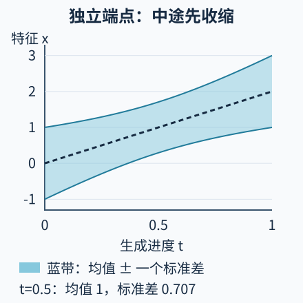

本讲目录
AI 前沿 01 · Flow Matching：怎样学会把噪声搬成数据
核心问题：如果噪声点和数据点之间可以画直线，为什么不能直接沿这条线生成？本讲区分“给定两个端点的训练路径”和“生成时真正可用的速度场”。先修：梯度与神经网络、生成图像的任务背景。研究资料核查截至 2026-09-08；文中注明首次公开日期，实验为可解析的一维模型，不代表图像模型性能。
1. 生成时，数据端点恰好是未知的
训练集给出许多图片，目标却不是原样抽取一张。我们希望先抽一个容易产生的随机向量，再通过可学习的变换得到新的样本。把向量想成运动中的点：初始分布是噪声，终点分布接近数据。这里的“运动”发生在特征空间，时间 \(t\in[0,1]\) 是无量纲的生成进度，不是物理秒数。
训练时可以抽到噪声 \(X_0\) 和数据 \(X_1\)，构造
每一对端点的路径都是直线，导数都是 \(U\)。但生成时只有新的 \(X_0\)，并不知道该去哪个 \(X_1\)。模型必须学会：只给当前位置与时刻，应该往哪里走？ 这就是速度网络 \(v_\theta(x,t)\) 的任务。

2. 为什么平方回归会得到正确的平均速度
最直接的训练目标是随机抽取时刻和端点，最小化
它不要求每次训练都数值积分整条生成轨迹，这就是此处“无需模拟的训练”的含义；生成仍需解常微分方程。许多端点对可能在同一时刻经过相同区域，因此目标速度不必唯一。
固定 \(X_t=x\)，令 \(m=\mathbb E[U\mid X_t=x]\)。把 \(U=m+(U-m)\) 代入并展开：
交叉项为零，因为条件下 \(\mathbb E[U-m\mid x]=0\)。第二项不受 \(v\) 控制，所以总体最优解是
这是条件期望的平方损失性质；神经网络受容量、数据和优化限制，未必达到最优。分布层面的理由也可看清：对光滑试验函数 \(\varphi\)，
在允许微分与期望交换、速度场足够正则等条件下，这对应连续性方程 \(\partial_t p_t+\nabla\cdot(p_tv^*)=0\)。因此求解 \(\dot Z_t=v^*(Z_t,t)\) 可以运输相同的边际分布，不要求复现原来每一对端点的配对。Flow Matching，首稿 2022-10-06给出了条件回归与边际目标之间的理论关系。
3. 一个能从头算完的高斯模型
设独立端点满足 \(X_0\sim\mathcal N(0,1)\)、\(X_1\sim\mathcal N(\mu,1)\)。本例坐标也无量纲。独立性使协方差项消失：
目标速度 \(U\) 的均值为 \(\mu\)，而
\(U,X_t\) 联合高斯，故条件均值是线性的；将均值、协方差和方差代入得到
第一项平移中心；第二项在前半程把点向中心拉，在后半程把点向外推。令 \(z_t=Z_t-t\mu\)，则 \(\dot z_t=(2t-1)z_t/D(t)\)。又因 \(D'(t)=2(2t-1)\)，积分后
这直接验证了 ODE 的边际方差确为 \(D(t)\)。当 \(t=1/2\)，标准差为 \(1/\sqrt2\)，即使两个端点的标准差都是 1！恒定速度 \(v=\mu\) 也能把本例的起点分布送到正确终点，但中间一直保持标准差 1，不符合所指定的插值路径。终点正确与路径匹配是不同的验收目标。
训练损失为什么未必应该降到零
在一个训练批次中，每行先独立抽取一对端点，再抽取一个 t，计算混合位置与目标速度。网络输入是位置和 t，数据端点只用来构造监督目标，不能在生成时作为额外输入偷渡进去。每次更新只回归这些局部速度；训练结束后，再从新的噪声点积分 ODE。
本例还能检查“损失非零就是没学会”这个误解。在 t=1/2 时，U 与 Xₜ 的协方差为零；二者联合高斯，所以条件速度的方差仍是 Var(U)=2。最优预测虽然是 μ，各端点对的实际速度仍上下波动，因此该时刻的最小期望平方损失就是 2。模型已经准确匹配条件均值，也能运输正确边际，却不能猜中被隐藏的端点配对。
实际训练报告中的损失同时包含这种条件不确定性、模型近似误差和有限样本波动。因此，更换路径或配对后，不能只比较未经校准的损失数值大小来宣布生成器更好。还应沿学到的速度实际求解，检查分布是否到达目标，以及有限步数是否把方差或细节压坏。
4. 实验：先预测中途的宽度
在操作前写下：当 \(\mu=2,t=1/2\) 时，均值和标准差各是多少？改变 \(\mu\) 会改变收缩比例吗？
静态实验后备：μ=2 的边际账本
| 时刻 t | 正确均值 | 正确标准差 √D(t) | 恒速平移的标准差 |
|---|---|---|---|
| 0 | 0 | 1 | 1 |
| 0.25 | 0.5 | 0.7906 | 1 |
| 0.5 | 1 | 0.7071 | 1 |
| 0.75 | 1.5 | 0.7906 | 1 |
| 1 | 2 | 1 | 1 |
即使交互未加载，也可代入公式核对全表。改变 μ 只平移均值线；独立端点造成的方差曲线不变。这是解析分布实验，没有训练图像模型，也没有测量采样质量。
5. 从直线目标到前沿研究问题
Rectified Flow，首稿 2022-09-07研究从配对直线路径学习 ODE，并用模型产生的新配对再次训练以改进路径。这不意味着“随机连接端点已得到最优传输”，也不意味着所有学习轨迹都天然是一条直线。本例生成轨迹包含 \(\sqrt{D(t)}\)，已经给出了区别。
高分辨率 Rectified Flow Transformer，首稿 2024-03-05把路径、时间采样与图文模型架构一起放入图像生成实验。它提供规模应用的证据，却不能把效果全归因于一个回归公式。Flow Matching Guide and Code，首稿 2024-12-09系统讨论路径设计及扩展，可作为继续推导的入口。
真正需要比较的是：同一数据与预算下，端点配对怎样影响速度方差？时间采样是否漏掉难学区域？少步求解带来的离散误差如何与模型误差区分？线性插值在训练阶段便宜，不保证生成只需一步。专业复现实验应同时记录速度误差、函数求值次数与样本指标，并报告潜空间解码器和条件引导设置。
更新的机制：平均速度能否跨过整段时间
Mean Flows，首稿 2025-05-19把学习对象从瞬时速度推进到区间平均速度。沿一条真实 ODE 轨迹定义
固定 r，对 s 使用乘积法则，得到 \(\overline v_{r,s}+(s-r)d_s\overline v_{r,s}=v(Z_s,s)\)。这提供了学习平均速度的恒等式；其中导数沿轨迹计算，不是只对显式时间变量求偏导。研究的单步采样是在学习这个不同的对象，并非把普通 Euler 步长任意放大。本讲高斯例子的全程平均速度恰为 μ，而起点瞬时速度是 μ−Z₀，两者的差异可直接算出。
FM 样本复杂度研究，首稿 2025-12-01进一步区分近似、有限样本和优化误差。在其损失正则性与数据有界等假设下才能使用相应保证；本讲的无界高斯模型不能未经检查直接套用。这条研究线关心的是“训练误差怎样转成分布误差”，不只比较图片是否好看。
6. 两道迁移题
题一：改变配对。 若不再独立抽端点，而令 \(X_1=X_0+\mu\)，写出 \(X_t\)、方差和最优速度。为什么终点分布没变，训练问题却变了？
展开推导与判断
此时 \(X_t=X_0+t\mu\)，方差恒为 1，\(U=\mu\)，所以 \(v^*=\mu\)。端点边际仍分别是两个单位方差高斯，但联合分布，也就是配对方式，改变了；中间路径与回归目标随之改变。不能只报起点终点分布而省略 coupling。
题二：一步 Euler。 使用本例正确速度，从 \(t=0\) 一步走到 1。结果有正确方差吗？这能否否定连续 ODE 的推导？
展开计算与误差来源
\(v^*(x,0)=\mu-x\)，故 \(Z_1^{Euler}=Z_0+\mu-Z_0=\mu\)：所有点塌到均值，方差为零。连续解终点却是 \(\mu+Z_0\)。失败来自使用跨度 1 的 Euler 离散，不是连续运输公式错误；增大步数或改进路径后仍需重新检查误差。
速查摘要
| 对象 | 公式或操作 | 使用边界 |
|---|---|---|
| 直线监督目标 | \(X_t=(1-t)X_0+tX_1\)，\(U=X_1-X_0\) | 端点配对方式必须说明 |
| 边际速度 | \(v^*(x,t)=\mathbb E[U\mid X_t=x]\) | 平方损失总体最优解 |
| 独立单位高斯端点 | \(D(t)=(1-t)^2+t^2\)，\(v^*=\mu+(2t-1)(x-t\mu)/D(t)\) | 常速平移仅匹配本例终点 |
| 生成 | 求解 \(\dot Z_t=v_\theta(Z_t,t)\) | 训练免积分不等于生成免积分 |
先修入口：神经网络；图像任务：文生图。一手来源：Flow Matching，2022-10-06 首稿、Rectified Flow，2022-09-07 首稿、高分辨率 RF Transformer，2024-03-05 首稿、FM Guide，2024-12-09 首稿。近期入口：MeanFlow，2025-05-19、FM 样本复杂度，2025-12-01。研究资料核查截至 2026-09-08。